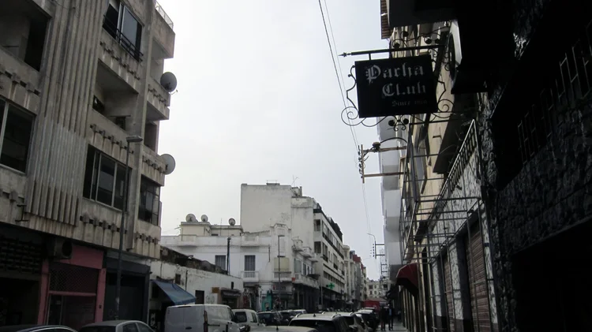
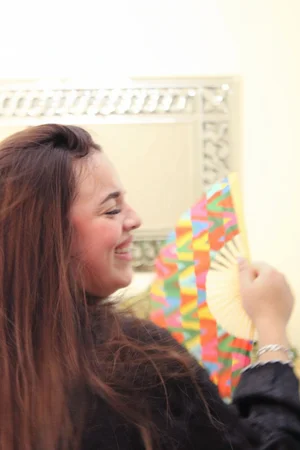
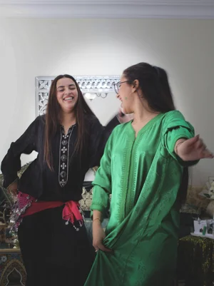
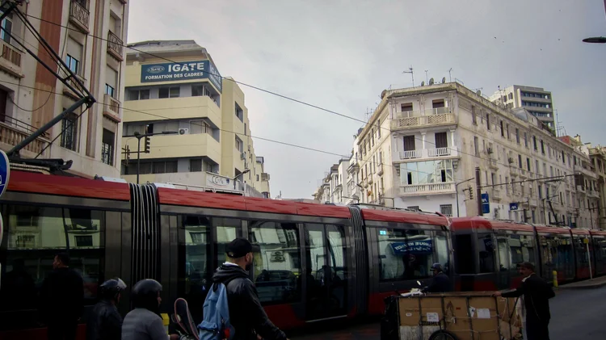
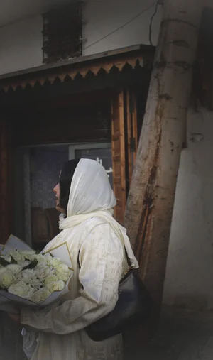
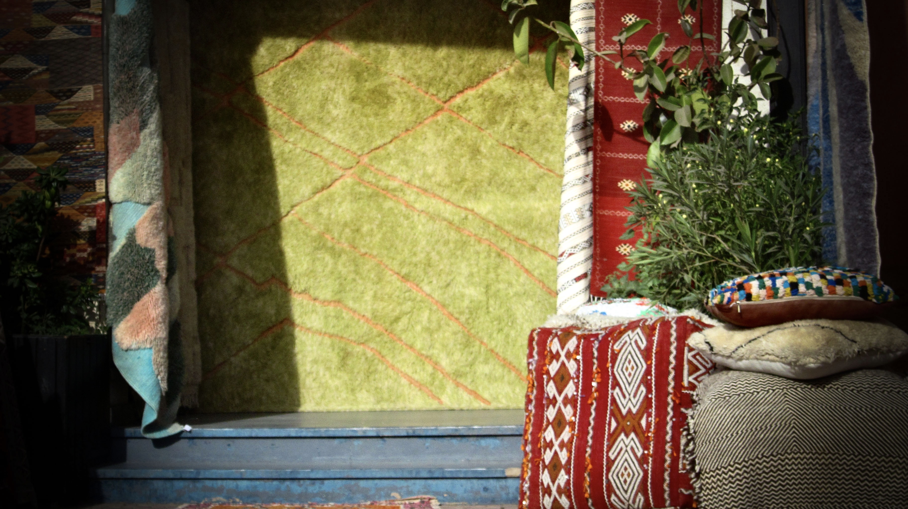
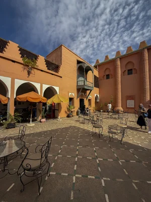
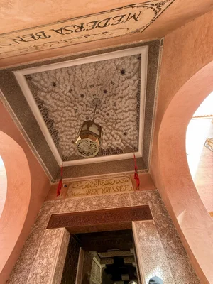
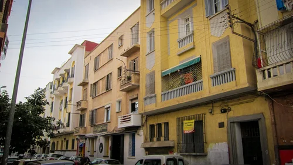

At the beginning of my trip, I was introduced to the feeling of being a foreigner in a country that has always shaped my identity.
Growing up in the United States, the cost of travel meant visits were rare. Morocco lived mostly in stories, family memories, and imagination.
But once I arrived, it became something more. Through the music, fashion, local streets, and the people around me, Casablanca began to feel like home. Through others, I began to understand more about myself.
There, I found a kind of joy I had not experienced elsewhere — the joy that only family and belonging can bring.
Below is Morocco through my eyes:
a collection of photographs capturing the colors, moments, and spirit of a place that is
both new and deeply familiar to me.
It is a strange thing to visit the place that makes up half of your identity.
To Morocco — where I’ve never felt more alive.
Cheers to us








